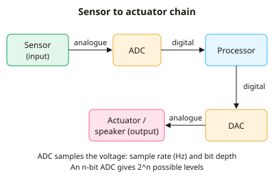

A-level Computer Science Year 12 · Topic 12
Input, output and storage
Input, output and storage is about the devices that get data into and out of a computer, and where it is kept.
We will choose input, output and specialised devices for different situations, and compare R A M, R O M and cache.
Then we compare magnetic, flash and optical storage, and look at virtual storage, the cloud and RAID.
- 4 subtopics
- 221 questions
- Free: 12.1 notes and 10 questions
In this topic
- 12.1Input, output and specialised external hardware devicesFree below · 45 questions
- 12.2Primary memory: RAM, ROM and cacheOpen in Full Marks · 46 questions
- 12.3Secondary storage: magnetic, flash and opticalOpen in Full Marks · 68 questions
- 12.4Virtual storage, cloud storage and RAIDOpen in Full Marks · 62 questions
12.1 · Free notes
Input, output and specialised external hardware devices

Key points
- Input devices send data into a computer and output devices present processed data to the user. Both need device drivers so the operating system can communicate with them.
- A barcode reader (laser or camera) works by reflection: dark and light bars reflect differently and are converted to a number that is looked up in a database. A QR code is a 2D matrix code that holds far more data than a 1D barcode and includes error correction.
- RFID uses a tag (microchip plus antenna) and a reader that sends radio waves. Passive tags are powered by the reader's signal and active tags have a battery and longer range. RFID needs no line of sight and can read many tags at once, so it suits stock control, contactless cards and pet microchips.
- A capacitive touchscreen senses a conductive finger changing the screen's electric field. It supports multi-touch and is durable. A resistive touchscreen has two flexible layers that touch under pressure. It works with gloves or a stylus and is cheaper, but is usually less clear and single-touch.
- Sensors (temperature, light, pressure, motion) produce analogue signals. An ADC (analogue-to-digital converter) turns them into binary for the processor and a DAC converts digital output back to analogue for speakers or actuators. Accuracy depends on sample rate (Hz) and bit depth, and an n-bit ADC gives 2^n levels.
- A laser printer uses a laser to build a pattern of static charge on a drum. Toner sticks to the charged areas, is transferred to the paper and is then fused by heat. It is fast with a low cost per page, so it suits high-volume office printing.
- An inkjet printer fires tiny droplets of ink from nozzles (thermal or piezoelectric). It is cheaper to buy and gives good colour and photo quality, but it is slower and ink costs more per page. A thermal printer heats heat-sensitive paper and uses no ink, which is why it is used for receipts.
- A 3D printer is an additive manufacturing device. It builds an object layer by layer, for example by melting plastic filament (FDM), from a digital model. It is used for prototyping, prosthetics and custom parts. A 3D scanner is the matching input device that captures a shape as a digital model.
- OCR (optical character recognition) converts scanned images of printed text into editable text. OMR (optical mark recognition) reads marks in set positions, such as multiple-choice answer sheets. Magnetic stripe readers read data from a magnetic strip on a card.
- A microphone converts sound into an analogue electrical signal through a diaphragm, and the signal is then digitised by an ADC. A digital camera uses a CCD or CMOS image sensor. Its resolution in megapixels is width × height in pixels ÷ 1 000 000.
- Other specialised devices include VR headsets (head-tracking sensors and stereo displays) and haptic devices that give touch or vibration feedback. A touch or motion sensor may also drive an actuator, an output device that produces physical movement.
- In exams, justify device choice by linking it to the scenario. Use criteria such as speed, cost, accuracy, resolution (dpi), durability, environment and the volume of data.
In more detail
- Worked checkout: a supermarket till uses a barcode scanner, weighing scales and a chip-and-PIN reader.
- Worked accessibility: a user with limited mobility might use voice recognition, eye tracking or a puff-and-suck switch.
- Worked outputs: a 3D printer for prototypes, a braille display for blind users, and an e-ink screen for a long-battery e-reader.
- Worked sensors and actuators: a smart thermostat reads a temperature sensor and drives an actuator that opens the boiler valve.
- OCR vs OMR: OCR turns printed text into editable text; OMR reads marks in fixed positions, like multiple-choice answer sheets.
Practice
Input, output and specialised external hardware devices: 10 questions
Pick an answer to check it, or open the answer for the explanation.
1. A supermarket wants to scan a whole trolley of goods at once without taking items out or lining up each label. Which input technology suits this best?
- Optical mark reader
- Magnetic stripe reader
- RFID reader with tags on each item
- Laser 1D barcode reader
Show answer
C: RFID reader with tags on each item. RFID uses radio waves, needs no line of sight and can read many tags at once. A 1D barcode reader must see each code individually.
2. A passive RFID tag has no battery. How does it obtain the power to send its stored data?
- From the radio signal sent by the reader
- From the mains via a USB cable
- From a lithium battery in the reader only
- From a small solar cell in the tag
Show answer
A: From the radio signal sent by the reader. A passive tag's antenna picks up energy from the reader's radio waves, which powers the chip long enough to reply. Active tags carry a battery.
3. A site manager must use a touchscreen while wearing thick work gloves. Which type is most suitable and why?
- Resistive, because it needs a conductive touch
- Capacitive, because it works by pressure
- Resistive, because it responds to pressure from any object
- Capacitive, because gloves conduct electricity
Show answer
C: Resistive, because it responds to pressure from any object. Resistive screens register pressure pushing two layers together, so gloves or a stylus work. Capacitive screens need a conductive touch.
4. A greenhouse temperature sensor gives a varying voltage. What must happen before the processor can use the reading?
- It passes through a laser scanner
- An ADC converts it to digital
- A DAC converts it to digital
- It is converted to hexadecimal only
Show answer
B: An ADC converts it to digital. Sensors give analogue signals. An analogue-to-digital converter (ADC) samples the voltage and outputs binary that the processor can handle.
5. A 12-bit ADC digitises a sensor signal. How many different values can it output?
- 4 096
- 12 000
- 1 024
- 144
Show answer
A: 4 096. An n-bit converter gives 2^n levels. 2^12 = 4 096 distinct values.
6. A microphone signal is sampled 8 000 times per second using 8 bits per sample (mono). How many bytes of data are produced in 5 seconds?
- 5 000 bytes
- 8 000 bytes
- 40 000 bytes
- 320 000 bytes
Show answer
C: 40 000 bytes. 8 000 samples/s × 1 byte × 5 s = 40 000 bytes. 320 000 would be bits, not bytes.
7. Which statement about how a laser printer works is correct?
- A laser forms a charge pattern on the drum and toner sticks to it
- Heated nozzles fire ink droplets onto the paper
- Toner is melted inside the drum before it touches paper
- The paper is magnetised so toner sticks to it
Show answer
A: A laser forms a charge pattern on the drum and toner sticks to it. The laser draws the image as static charge on the drum. Toner clings to the charged areas, is transferred to paper and is fused with heat.
8. An office prints 5 000 pages of text each month. Why is a laser printer usually better than an inkjet?
- It has a lower cost per page and prints faster
- It prints higher-quality photos
- It is much cheaper to buy
- It needs no electricity
Show answer
A: It has a lower cost per page and prints faster. For high-volume text, a laser printer is faster and its toner gives a lower cost per page. Inkjets are cheaper to buy but costlier to run.
9. How does a typical FDM 3D printer create an object?
- By scanning the object with a laser
- By pressing sheets together in a mould
- By melting material and depositing it layer by layer
- By cutting material away from a solid block
Show answer
C: By melting material and depositing it layer by layer. 3D printing is additive manufacturing. The nozzle deposits melted filament in successive layers. Cutting material away is subtractive.
10. Why can a QR code store more data than a standard 1D barcode?
- It uses no error correction
- It must be printed in colour
- It is read by RFID
- It encodes data in two dimensions
Show answer
D: It encodes data in two dimensions. A QR code is a 2D matrix, so data is encoded across both rows and columns, which gives far more capacity than the bars of a 1D code.
Keep going in Full Marks
Full Marks has 45 questions on Input, output and specialised external hardware devices (35 more than here), set out in practice levels. You also get notes and 3D models for all 4 subtopics of Input, output and storage, plus games, timed exams and past papers.